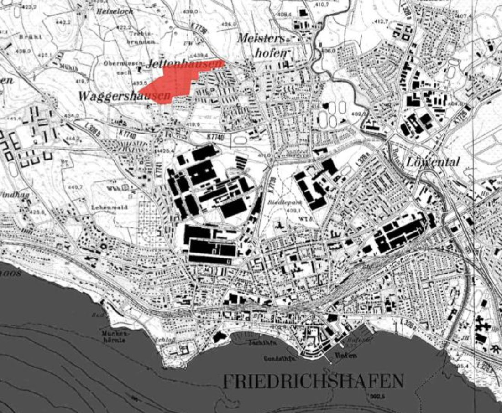
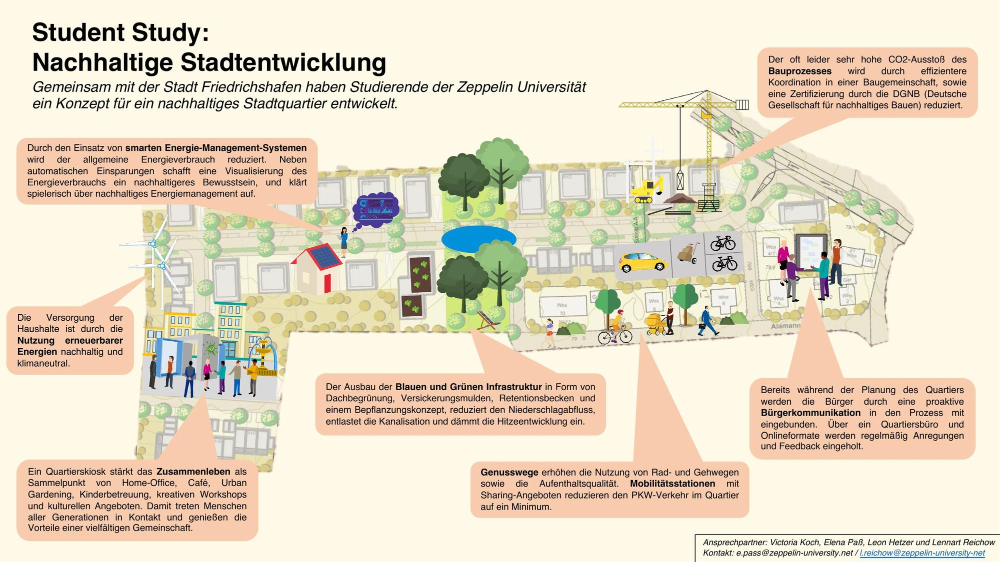

Student Study · Zeppelin University · 2021
Student Study: Sustainable Urban Development
A self-organised semester course at Zeppelin University in cooperation with the City of Friedrichshafen
Overview
Together with three fellow students, I organised the Student Study “Sustainable Urban Development”, a semester-long academic format at Zeppelin University. A Student Study allows students to design and run their own course (6 ECTS) alongside the formal curriculum. As organisers, we were responsible for the course content, the organisation of guest lecturers, and the seamless operation of the course. While the standard examination format is a presentation and report, our assessment consisted of an extensive reflective paper on the course itself.
The central case was the planned development of “Langes Feld”, Friedrichshafen's first climate-neutral urban district. The area is a long-term urban development project designed for approximately 2,500 residents and involves complex challenges related to climate neutrality, mobility, green infrastructure, housing, governance and citizen participation. The project combined academic input with real-world practice through close cooperation with the City of Friedrichshafen.
Interdisciplinary Process & Methods
The Student Study combined expert input, methodological training and collaborative group work in an interdisciplinary setting. Weekly thematic sessions brought together perspectives from academia, public administration and professional practice, complemented by direct input from the City of Friedrichshafen on planning frameworks, constraints and long-term ambitions for the “Langes Feld” district.
Alongside these inputs, participants worked in small groups on specific dimensions of sustainable urban development for the Langes Feld case. The thematic focus areas included:
- Climate-neutral urban districts and blue-green infrastructure
- Sustainable mobility and transport economics
- Smart City concepts, digitalisation and open government
- Integration of urban development strategies (SDGs, SMART goals)
- Corporate Urban Responsibility and the role of private actors
- Cultural planning, participation and place-based identity
Methodologically, the course relied on stakeholder analysis, long-term perspective building and user-centred approaches such as personas and Design Thinking to better understand citizen needs. Impact-oriented goal setting and strategic reflection on governance, implementation and scalability were central throughout the process.
A strong emphasis was placed on recognising real planning trade-offs, for example between climate targets and housing demand, infrastructure expansion and environmental protection, or digital efficiency and ethical and democratic concerns. Rather than aiming for a single master plan, the process encouraged iterative thinking, critical reflection and realistic positioning within municipal planning realities.
Outcome
The Student Study resulted in five coherent conceptual approaches developed by each group, addressing the core dimensions mentioned above. Key outcomes included:
- Strategically grounded concept ideas for a climate-neutral urban district
- A deep understanding of sustainable urban development as a long-term, negotiated and multi-actor process
- Practical experience in working at the interface of academia, public administration and urban practice
Beyond the concrete outputs, the Student Study functioned as a real-world learning laboratory. It demonstrated how universities can actively contribute to local urban transformation and laid the groundwork for continued cooperation between students, the university and the City of Friedrichshafen.

Personal Learning
Organising the course was my first direct exposure to planning actors from municipalities, academia and private companies. This experience significantly broadened my perspective and deepened my interest in urban planning. It became the first real spark in my planning career.
I was particularly drawn to the idea that many global challenges can be addressed at the local scale, by working with the people who are actively shaping cities and implementing change. Engaging with practitioners and understanding the groundwork behind urban transformation fascinated me, and continues to do so.
Through the Student Study, I also established contact with the consultancy City & Bits, who contributed a lecture on personas, Design Thinking and their work with municipalities. This connection led to an internship and later a position as a student worker. Ultimately, these experiences played a key role in my decision to pursue urban planning as a field of study. In this sense, the Student Study marked the beginning of something much larger.
Interested in the concepts or in the course format? I am happy to share the reflective paper.
Write me: lennart.reichow@gmail.com